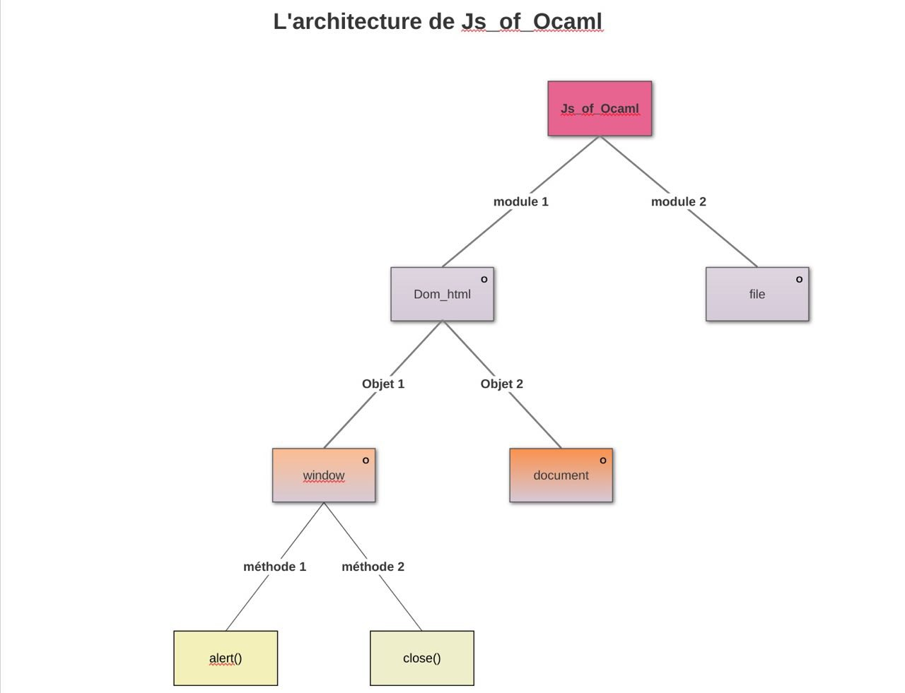

Rapport de la semaine de 2/6/2018 :
A)Installation :
Js_of_ocaml :
Il y a deux façons différentes d’installation de Js_of_ocaml :
1-Par le gestionnaire de paquet Opam en une seule ligne de commande :
$ opam install js_of_ocaml js_of_ocaml-ppx js_of_ocaml-lwt
2- Depuis la source :
Téléchargement du paquets depuis le lien : http://ocsigen.org/js_of_ocaml/3.1.0/manual/overview puis la commande :
$ make spam-installer js_of_ocaml-compiler opam-installer js_of_ocaml opam-installer js_of_ocaml-ppx opam-installer js_of_ocaml-lwt
Obrowser :
Il faut d’abord marquer la commande suivante afin de changer la version de Ocaml avec la bonne version de Ocaml dans le terminal :
$ opam switch 3.0.1
Puis on peut l’installer :
1-Par le gestionnaire de paquet Opam :
Il suffit de passer la commande :
opam install obrowser
2-Depuis la source :
Si le paquet sharutils n’est pas installé on l’installe , il faut puis récupérer le dossier sur le site après cela depuis le répertoire de base on passe la commande :
make
BuckleScripts :
Il faut d’abord marquer la commande suivante afin de changer la version de Ocaml avec la bonne version de Ocaml dans le terminal :
$ opam switch 4.02.3+buckle-1
Puis Il y a deux manières de procéder l’installation :
1- Par le gestionnaire de paquet npm :
Si npm n’est pas déjà installé sur la machine on commence l’installation en créent un compte sur le site npmjs.com puis on passe les commande :
$ curl -sL https://deb.nodesource.com/setup_8.x | sudo -E bash -$ sudo apt-get install -y nodejs
une fois installé il faut d’abord créer un compte sur le site de npm puis passer la commande :
$ npm install -g bs -platforme
On marque la commande suivante pour s’assurer que l’installation a été bien réalisée :
$ node -v
la version doit être v8.9.1 ou plus.
En fin afin d’installer BuckleScript on marque :
$ npm install --save bs-platform
2- Par le gestionnaire de paquet nvm (recommandé si npm n’est pas installé ) :
Pour cela il suffit de suivre les instructions sur : https://github.com/creationix/nvm dans le but d’installer le paquet nvm puis on pourra directement passer la commande suivante afin d’installer
BuckleScript :
$ npm install --save bs-platform
B)Documentation / Tutorat :
Js_of_ocaml :
Il n’y a pas vraiment de documentation sur le site de la source mais un manuel de référence expliquant assez brièvement la syntaxe ,de plus le manque d’un tutorat pour expliquer la syntaxe pas à pas avec des exemples semblerait donc de rendre l’apprentissage de js_of_ocaml un peu difficile pour les novices bien qu’il existe plus de projets Js_of_ocaml que BS ou encore O’Browser en ligne.
Obrowser :
La seule documentation existante pour O’browser est le fichier .wiki téléchargé avec le paquet mais le point fort de l’apprentissage de Obrowser est les exemples bien expliqués avec une sorte de tutorat en .html qui accélère le progrès de l’apprentissage.
BuckleScripts :
BuckleScripts a la meilleure documentation par rapport aux méthodes mentionnées avant.Elle se trouve sur le site de BuckleScripts à l’adresse https://reasonml.github.io/docs/en/interop.html malgré cela le manque d’exemples (hormis celui fournis avec le tout premier projet ) pourrait être un désavantage.Il faut aussi noter qu’il existe bien plus de projet BuckleScript en ligne écrit en langage Reason qu’en Ocaml.
C)Compilation :
Js_of_ocaml :
Pour compiler le fichier .ml il suffit d’exécuter la commande suivante :
$ ocamlfind ocamlc -package js_of_ocaml -package js_of_ocaml-ppx -linkpkg -o exemple.byte exemple.ml
Puis pour construire le fichier javaScript :
$ js_of_ocaml exemple.byte
Obrowser :
Il
suffit d’exécuter la commande :
$
CAMLLIB=$OBROWSER_PATH/rt/caml ocamlc hello.ml -o hello.exe uuencode
exemple.exe stdout > exemple.exe.uue
Il faut après cela copier le fichier vm.js dans le même dossier que le fichier .exe.uue et on peut par conséquent visualiser la page .html que l’on avait déjà placé dans le même dossier. Si cette méthode renvoie une erreur le plus simple serait de remplacer le code des exemples donnés par votre propre code.
BuckleScripts :
Une fois que l’on est dans le dossier src d’un projet Bs il suffit de marquer la commande suivante pour compiler et générer le fichier JavaScript en même temps :
$ npm run build
En BS on peut aussi profiter de la compilation à la volet avec :
$ npm run watch
D)Interopérabilité :
 Js_of_ocaml :
Js_of_ocaml.ml est un bibliothèque de module ocaml et chacun de ces module contient un ensemble de concepts (objets , méthodes , valeurs etc …) permettant de manipuler une partie d’une page web grâce aux fonctions JavaScript, On peut prendre le cas de la fonction javaScript alert() pour illustrer cette architecture cette fonction est implémentée en une méthode de l’objet window du module Dom, un module qui manipule les Document Object Model :
open Js_of_ocaml
window##alert(Js.string "hello")
Obrowser :
Obrowser possède une syntaxe assez proche de celle de Js_of_ocaml mais elle est encore plus simplifiée ,plus d’objets : l’auteur a choisit la simplicité et la lisibilité contre la complétude des fonction javaScript.Résultat : l’équivalent du bout de code précédent ici se résume en :
open Js
alert "hello"
Il ne faut tout d même pas oublier qu’il existe plus de modules en Obrowser qu’en js_of_ocaml car ce dernier implémente aussi quelque modules Ocaml importants tel que Graphics ou encore Lwt le module des threads pour faire de la concurrence.
BuckleScripts :
Bs a une syntaxe un peu différente de Js_of_Ocaml et O’browser car avec ce langage on n’utilise plus de module Js mais il sera nécessaire de définir chaque fonction de la bibliothèque javaScript que l’on souhaite utiliser en utilisant le mot clé external par exemple l’exemple de alert() se traduit par le bout de code suivant en BuckleScripts :
type dom;;
external dom: dom = "document" [@@bs.val]
external alert: string -> unit = "alert" [@@bs.send]
Puis on utilise la fonction que l’on vient de définir :
alert "hello"
Une autre différence de BS est la possibilité de mettre en place des fragments JS avec le mot clé %raw bien que cette dernière soit un peu en contrariant avec l’esprit typage qui est tout l’intérêt de faire coopérer Js et Ocaml, il faut tout de même noter qu’il pourrait être une grande aide pour les novices qui ont des bases en JavaScript.
En resumé : (chaque étoile vaut un point sur 5 )
|
|
Js_of_ocaml |
O’Browser |
BuckleScript |
|
Facilité d’installation avec gestionnaire de paquets |
***** |
***** |
*** |
|
Facilité d’installation depuis la source |
***** |
***** |
* |
|
Version Ocaml compatible |
4.06.0 (dernière version :de 2017-11-03) et avant |
3.12.1 |
4.02.3 et avant |
|
documentation |
*** |
** |
**** |
|
Exemples / Tutorat bien expliqué |
** |
***** |
**** |
|
Lisibilité du code ocaml |
*** |
*** |
**** |
|
Lisibilité du code Js |
* |
*** |
***** |
|
Compatible avec Reason |
Oui |
Non |
Oui |
|
Maintenance |
**** |
* |
*** |
|
Facilité de la syntaxe |
*** |
**** |
** |